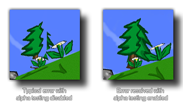

draw_set_alpha_test(enable);
| Argument | Description |
|---|---|
| enable | Set to true or false to enable or disable alpha testing. |
Returns: N/A
This function will enable or disable alpha testing for your game
(by default this is disabled). By switching alpha testing on you
can then use the companion function draw_set_alpha_test_ref_value
to set the "cut-off" value at which all alpha values will be set to
0. The image below shows the difference that can be seen when alpha
testing is switched on or off:
 NOTE:
This function may negatively affect performance on iOS and Android
devices.
draw_set_alpha_test(true);
draw_set_alpha_test_ref_value(128);
The above code will switch on alpha testing and set the test threshold to 128 (only pixels with an alpha over 0.5 will be drawn).